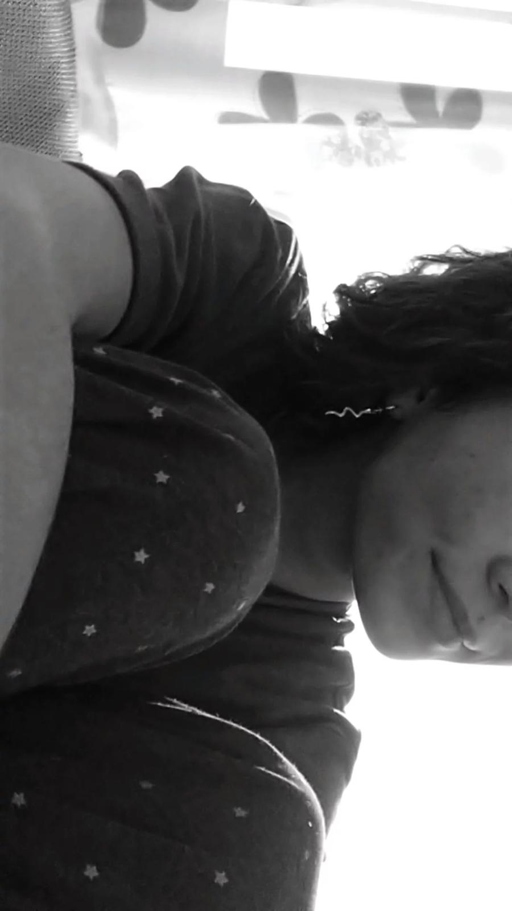

Descripcion de Amalia, en plan, con cosas suyas (palsbras textuales de la señortia Vizuete):
Antes de comenzar a decir los puntos buenos o malos, cabe decir una breve descripcion de la señora Bizueta JAJAJAJAJA
Amalia es una chica Extremeña de un pueblo sureño, llamado Azuaga. Ahora mismo está cursando 3ºEso, desde mi punto de vista el curso más dificil de la ESO, es una chica que estudia bastante y se agobia muy rapido. Quiere ser teniente pero su madre no le deja pq es peligroso. Es pelirroja, igual q su padre, los genes se los ha llevado del padre. Es muy poco cariñosa, si algún día dice algo bonito se puede llegar a montar una fiesta
Puntos buenos:
Me alegra y me saca una sonrisa cada día. Aunque ella no se sepa nada, con un simple mensaje me puede levantar el día entero.
Amalia es demasiado graciosa, no hay dia en el que no me muera de la risa con ella, entre las tonterias que tienes encima y los videos de la pastilla hacen la dupla perfecta JAJAJAJAJA.
Es muy guapa. Diria que es la chica más guapa q he visto in my life. Pero mejor no decirselo pq se lo tiene muy creido la chiquilla.
Tenemos muchas cosas en común. Desde que empezamos ha hablar me he dado cuenta de que hay miles de cosas en común.
Me conoce de puta madre. Sabe en todo momento que me pasa, sabe lo q me pica y lo q me gusta.
En el tiempo que estoy hablando con ella se me pasa volando.
Esto no es un punto bueno pero a mi mg. Es un poco toxica y eso me mola bastante AJAJJAAJ.
Me encanta la forma en la que viste, just in love.
Puntos malos:
Aunque no hay puntos malos, hay que añadir un par de cositas.
Es muy, pero que muy cabezona dioss
Suda muchas veces de mis mensajes
Hay a veces que tarda mucha en contestarme :(
Y yo creo q no hay más puntos malos, alomejor me dejo alguno, pero no lo creo
Pos ya estaria la pagina web, pa que veas lo q hago...
Espero q te haya gustado xd, aunque lo podria haber mejorado bastante
t'estimo boiga <3